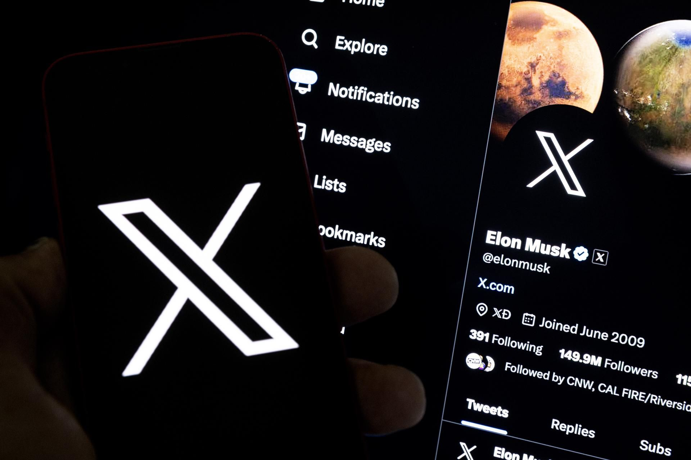

Fecha de Lanzamiento
06 de octubre de 2010Empresa encargada
Propiedad de Facebook, Inc ahora Meta.Caractesitica atractiva
Es visual, así que casi todo lo que se ve tiene fotos o vídeos. La facilidad de ver imágenes,
la posibilidad de entrar en miles de cuentas abiertas a curiosear y la sencillez de uso la convierten
en una poderosa aplicación online.
Tecnologias de desarrollo
- HSTS
- PWA
- Open Graph
Spotify
Fecha de Lanzamiento
07 de octubre de 2008Empresa encargada
Propiedad de Spotify ABCaractesitica atractiva
Está orientada a la música. Tras el registro y creación de tu cuenta disfrutarás de miles de canciones
de grupos nuevos y no tan nuevos. En Spotify tener acceso a música ilimitada sin anuncios y sin conexión.
Tecnologias de desarrollo
- Sentry
- PWA
- Open Graph
- Core-js

Fecha de Lanzamiento
mayo de 2003Empresa encargada
Microsoft TechnologiesCaractesitica atractiva
Está diseñada para utilizarla en el ámbito profesional. En ella se puede ingresar tu perfil laboral y ser
visto por aquellas empresas o particulares que buscan servicios específicos. Estar presente es una buena
opción para ser conocido a nivel profesional.
- Java
- Node Js
- HSTS
- Core-js
Youtube

Fecha de Lanzamiento
14 de febrero de 2005Empresa encargada
Propiedad de GoogleCaractesitica atractiva
Esta aplicación permite compartir y visualizar millones de vídeos creados por los usarios.
Los famosos youtubers crean canales a los que te puedes suscribir y así estar informado en
todo momento de las novedades.
- Polymer
- Open Graph
- PWA
Twitter - X
Fecha de Lanzamiento
21 de marzo de 2006Empresa encargada
Propiedad de Twitter, Inc. ahora X corpCaractesitica atractiva
Permite mandar mensajes y compartir fotos, vídeos… Twitter tiene limitados los mensajes a 280,
con lo que hay que ser más conciso al escribir. Es otra de las grandes favoritas de las empresa
y medios de comunicación y periodistas. Es principalmente utilizada para estar constantemente
informado de lo que ocurre en cualquier parte del mundo.
- expres
- node.js
- React
- HSTS